出稿マニュアル — はじめに
新人運用者が出稿業務を1から覚えるためのマニュアル。
「なぜそうするのか」を理解した上で、正確に出稿できるようになることがゴール。
出稿とは
Meta、TikTok、Xなどの媒体で広告の配信設計を行うこと。
- どんな広告を流したいか
- どんな人に配信したいか（年齢、地域、性別など）
を設定して、広告を世に出す作業。
なぜ出稿が重要なのか
案件選定 → 制作 → 運用（出稿） → 分析 → 制作に戻る
- 運用者は「制作 → 分析」のサイクルを回すことが本業
- 出稿を巻き取ることで、運用者がより制作に注力でき、売上が上がる
- 出稿の正確さが、計測の正確さに直結する → ミスると成果が測れなくなる
売上が生まれるまでの流れ
ユーザー（SNSを見ている人） → クリエイティブ（広告）が流れてくる → クリックすると記事に飛ぶ（自社で作成） → 記事を見て次のボタンをクリック → LP（クライアントの予約フォーム） → 予約完了 → サンクスページ到達 = コンバージョン（CV）発生
- 1CV = 単価分の売上（例: 単価2万円なら1CV = 2万円）
- 利益 = 単価 - 消化金額（広告に使った費用）
- 消化金額を抑えてCVを取るほど利益が大きくなる
キャンペーン・広告セット・広告の構造
キャンペーン
└── 広告セット
└── 広告
| 階層 | 役割 | 設定するもの |
|---|---|---|
| キャンペーン | 箱 | 名前、予算 |
| 広告セット | ターゲティング | 年齢、性別、地域、開始日 |
| 広告 | 配信物 | CR（動画）、記事URL、ページ |
この3つが全て設定されて初めて広告が配信される。基本は翌日0時から配信開始。
心構え
- 分からないことがあったら何でも聞く — アド管理メンバー、他のアルバイト、依頼者（運用者）に遠慮なく
- 不明点をそのままにしない — なんとなくで作ると損失が生まれる。聞いたことで責められることは絶対にない
- 最初のうちは速さより正確さ — 慣れたら勝手に早くなる。焦らなくて大丈夫
Meta（Facebook）出稿 — 基本フロー
Meta広告の出稿を、依頼を受けてから公開するまでの一連の流れ。出稿の種類に関わらず共通する基本フロー。
出稿の全体像
CR数と設計数確認 → CRアップロード → Beyond記事作成 → キャンペーン作成 → 広告セット設定 → 広告設定 → 確認 → 公開
なぜこの順番なのか:
CRアップロードは時間がかかる → 先に開始して、待ち時間でBeyond記事を作るのが効率的。
キャンペーン → 広告セット → 広告は階層構造。上から順に作らないと下が作れない。
Step 0: 依頼の確認
やること
出稿依頼スプシで自分の名前が入っている依頼を確認する。
確認する情報
| 項目 | スプシの列 | 確認ポイント |
|---|---|---|
| 案件名 | - | どのクライアント・メニューか |
| 媒体 | - | Meta / TikTok / X 等 |
| CR数 | - | 何本のクリエイティブを出すか |
| 設計パターン | - | 冒頭 / 年齢別 / 地域別 等 |
| キャンペーン名 | F列 | 命名規則に従っているか |
| 予算設定 | N列・P列 | キャンペーン予算 or セット予算、金額 |
| ピクセル・CV設定 | U列 | データセット・コンバージョンイベント・アトリビューション |
配信設定が適切に行われないとCVが発生しない。
例：男性用の脱毛サロンの広告を女性に配信してしまったら、クリエイティブが無駄になる。
最初のうちは速さより正確さ。
Step 1: CRアップロード
CRをGoogleドライブからダウンロードし、Meta広告マネージャーのメディアライブラリにアップロードする。
1-1. 素材のダウンロードと事前準備
- 出稿依頼スプシで対象キャンペーンの行を確認し、CRフォルダURLのリンクからGoogleドライブのフォルダを開く
- アップロード対象の動画ファイルを複数選択する
- 右上のダウンロードアイコンをクリックし、PCのローカル（ダウンロードフォルダ等）に保存する
- 複数ファイルの場合はZIP形式で保存されるので、MacのFinder（またはWindowsのエクスプローラー）で解凍して動画ファイル（.mp4）を展開しておく
- スプシに戻り、対象の「広告アカウント名」をコピーしておく
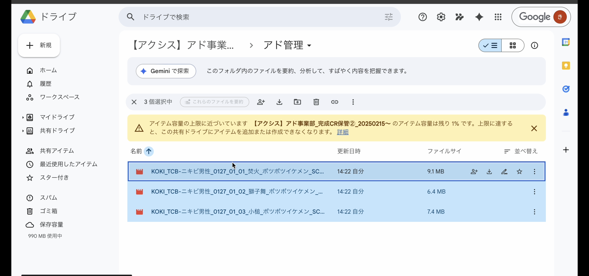
Googleドライブでアップロード対象の動画ファイルを複数選択した状態
1-2. メディアライブラリを開く
- Meta広告マネージャを開き、左側メニューの「すべてのツール」（三本線アイコン）をクリック
- メニュー一覧から「メディアライブラリ」を選択
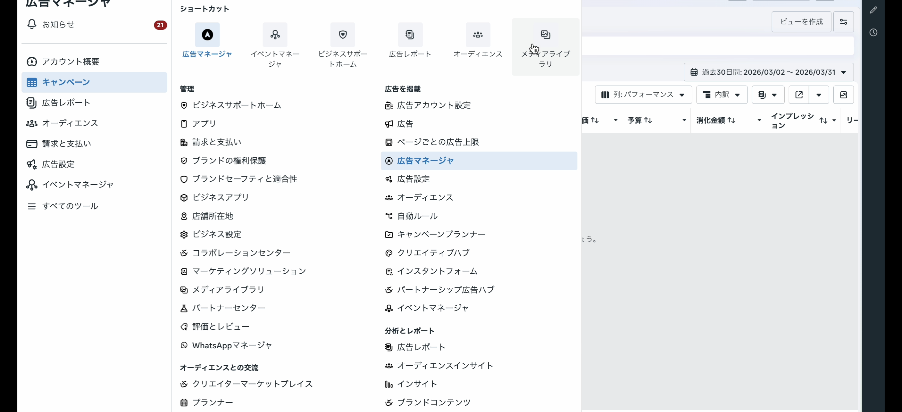
「すべてのツール」を開いた状態。左下の「メディアライブラリ」を選択する
- メディアライブラリ画面の左上にあるビジネスアカウントのプルダウンを開く
- 先ほどコピーした「広告アカウント名」を検索窓に貼り付け、正しい広告アカウントを選択
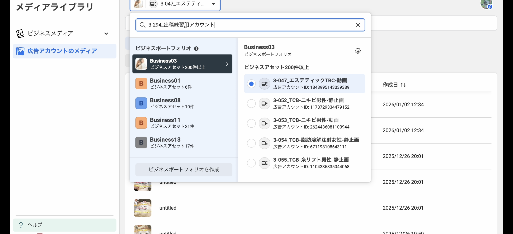
アカウント名で検索し、該当のビジネスポートフォリオ → 広告アカウントを選択する
1-3. アップロード
- 「広告アカウントのメディア」画面で「動画」タブが選択されていることを確認
- 「Add Media（メディアを追加）」 → 「Add Video（動画を追加）」をクリック → ファイル選択ダイアログが開く
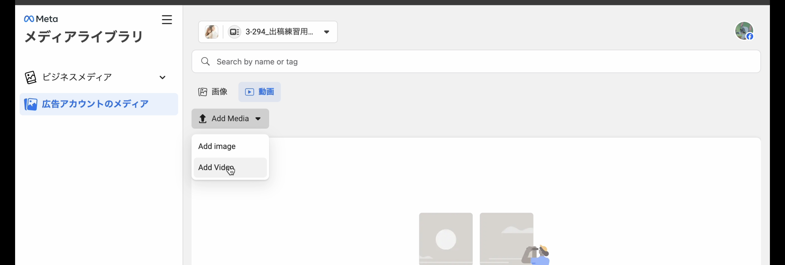
「動画」タブを選択した状態で「Add Media」→「Add Video」をクリック
- 解凍しておいた動画ファイルをすべて選択し、「開く」をクリック
- 「アップロード中」のダイアログが表示される → 各ファイルのエンコード処理が進む
- すべてのステータスが完了（緑色のバー）になったら「OK」をクリック
- メディア一覧に、アップロードした動画のサムネイルが表示されていれば完了
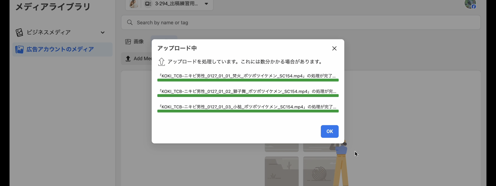
3ファイルとも緑バーで処理完了。「OK」をクリックして完了
ビジマネとアカウントの関係
Business01 Business03 Business08 ← ビジマネの中にアカウントが存在する Business11 Business13 Business14
アカウントがどのビジマネに属するかは、アカウント名の先頭の数字で判断する。
例: 3-294_出稿練習用アカウント → Business03
Step 2: Beyond記事作成
Squad beyond上で既存の記事を複製し、新しいキャンペーン用の記事URLを作成する。
なぜアフィリンクを分けるのか:
キャンペーンごとに遷移先のURLを分けている。中身は同じだがURLが違う。
理由: 効果測定を正確にするため。
2種類のキャンペーンで最終的な遷移先が同じだと、CVが発生してもどちらのキャンペーンの成果か測定できなくなる。
どのクリエイティブでCVがついたかは非常に重要な情報。それを識別するためにキャンペーンごとにアフィリンクを分ける。
2-1. 複製元記事の確認と検索
- 出稿依頼スプシで対象案件の「複製元beyondページ名」を確認する
- Squad beyondのダッシュボード（beyondページ）を開く
- 左側のフォルダリストから、該当する案件のフォルダを選択する
- フォルダ内の記事一覧から、「複製元beyondページ名」と一致する記事を探す
2-2. 記事の複製と名前の変更
- 該当記事の右端にある⋮（三点メニュー）をクリックし、表示されたメニューから「beyondページ複製」を選択する → モーダルが開く
- スプシに戻り、「beyondコピペ用CPN名」列の値をコピーする
- Squad beyondの複製画面に戻り、「beyondページ名」の入力欄に貼り付ける
- 右上の「複製する」ボタンをクリック
2-3. アフィリンクの置換
- 複製が完了したら、右上の「媒体/名前検索」で複製した記事名を検索して表示する
- 複製した記事のタイトルをクリック → 編集画面（エディタ画面）が開く
- versionを開く（別タブで開いた方が楽）
- 「リンク置換」マークを開く → 全て選択 → スプシのアフィリンクを入力 → 置換
- 更新ボタンを押す（オレンジ → 青になればOK）
2-5. 記事URLの取得
- 元のタブに戻って「記事URL」をコピーする
- スプシに貼り付ける
- ドライブURL抽出にドライブURLを貼って実行する
Tips: スプレッドシートとSquad beyondの画面を行き来するため、デュアルモニターを使用するか、ウィンドウを左右に並べて作業するとミスを防ぎやすい。
ポップアップ記事の場合
ポップアップ記事の指定がある場合は、アフィリンク置換後に追加作業が必要:
- アフィリンク置換・更新 → 左の「ポップアップ」を選択
- 該当のversionを選択 → リンク＋ → 出てきたリンクを選択
- 本番反映を押して完了 → 戻って記事URLをコピーする
Step 3: キャンペーン作成
新規作成の場合
- キャンペーンを作成する
- キャンペーンの目的を選択 → 手動作成の売上キャンペーン
- 設計数に合わせて広告セット・広告数を作成する（3つの点 → 複製 → 既存のキャンペーン → 複製したい数 → 複製する）
- 広告セット階層のオーディエンスを切り替える（Advantageオーディエンス → 元のオーディエンスオプションに切り替え → 「元のオーディエンスを使用」を選択）
複製の場合（基本はこちらが多い）
- キャンペーン名にあるキーワードでキャンペーンを絞る（運用者名、年齢など）
- キャンペーンの中身を確認して、似たキャンペーンを複製する
- 「現在の設定を使って複製」を選択
- 複製数は 1
- キャンペーン名をスプシのF列の内容に修正する
- キャンペーン詳細: 売上
- スプシN列が「キャンペーン予算」なら、キャンペーン予算をONにしてP列の金額を記入する
- 設計数に合わせて広告セット・広告数を増やす or 削除する
Step 4: 広告セット設定
広告セット名の修正
- 修正したい広告セットを全て選択 → 編集横の▼ → 名前
- 出稿内容によって広告セット名を変える:
- 冒頭: 広告セット名 → CR名
- 年齢別: 広告セット名 → 年齢
- 地域別: 広告セット名 → 駅名（院＋駅名）
広告セットの内容修正
- 全て選択 → 編集
- ウェブサイト → データセット・コンバージョンイベント・アトリビューション設定はスプシU列の内容を選択
- 開始日は翌日の00:00
- 地域・年齢・性別を設定する
- 年齢別: 広告セット名に合わせて年齢を修正 → 下書きとして保存
- 地域別: 1キャンペーンずつ地域（駅名）を選択していく
- 駅名検索 → 駅の場所が合っていそうなら選択（違う駅が出ることもあるので要注意）→ 範囲選択
- 駅名で出てこなければ出稿依頼スプシの「店舗一覧」シートから住所検索する
Step 5: 広告設定
広告名の修正
広告名を広告セット名に合わせて修正する（例: 広告セット名が「52」なら、広告名も「52」）
ページ選択
出稿依頼シートに記載されているページ名、またはDBシートの「FBページ」シートで該当案件のページを検索
URL設定
- 広告のURLを修正する: 全て選択 → 編集横の▼ → ウェブサイトURL
- Beyondで作成した記事URLを貼る → 下書きとして保存
リファラ設定
- URLパラメーターを作成する
- キャンペーンコンテンツの
{{ad.name}}を選択する
リファラ = ユーザーがサイトにアクセスする際に利用したリンク元のページ情報。これにより、どの広告経由でユーザーが来たかを追跡できる。
CR設定
- 広告を全選択 → 編集横の▼ → メディア
- 修正したい広告を選択 → 広告名をコピー → 検索して該当CRを選択
- 年齢別: 該当の年齢CR名をコピー
- 地域別: 該当の院・駅名のCR名をコピー
- 出てきたCRを選択 → 次へ（CRが重複した場合は一番左の新しいCRを選択）
- CR全て修正したら下書きとして保存
Step 6: 確認
広告まで作成できたら、依頼内容と一致しているか全項目を確認する。キャンペーン → 該当のCPNから編集 → 内容が問題ないか確認していく。
- キャンペーン名
- 予算金額
- データセット・コンバージョン・アトリビューション設定
- 開始日
- 地域
- 年齢
- 性別
- Facebookページ
- 記事URL（※URLを取り違えると正しくユーザーの計測ができない）
- 動画（正しいCRが入っているか）
- CPN・広告セット・広告が全て選択されているか
- 配信ONになっているか
Step 7: 公開
- 内容が問題なければ公開する
- 配信オフになっていたら配信をONにする
- 出稿依頼スプシにチェックを入れる
- 運用者へ報告する
・CR待ちの場合: CR以外を作成・公開してCRを待つ（公開にしないと他の人が触れなくなるため）
・右上の「確認して公開」が残っていないか要注意 → 残っていたら正しく配信されていない
Meta出稿 — 種類別差分
基本フローは共通で、種類ごとに一部の設定だけが異なる。ここでは差分だけをまとめる。
出稿種類の一覧
| 種類 | 予算の場所 | 難易度 | 特徴 |
|---|---|---|---|
| キャンペーン予算（冒頭） | キャンペーン階層 | 低 | 基本形。同じ設定で複数CRを検証 |
| キャンペーン予算（年齢別） | キャンペーン階層 | 低 | 年齢セグメントごとに広告セットを分ける |
| キャンペーン予算（地域別） | キャンペーン階層 | 高 | 地域（駅名）ごとに広告セットを分ける |
| セット予算 | 広告セット階層 | 高 | 広告セットごとに予算を設定 |
| tcpa | キャンペーン階層 | 高 | 単価の目標を設定して最適化 |
| ASC | キャンペーン階層 | 中 | Advantage+ ショッピングキャンペーン |
| セールスキャンペーン | キャンペーン階層 | 中 | ASCでセグメント切りたい場合 |
キャンペーン予算（基本形）
基本フローそのまま。差分なし。
- キャンペーン予算: ON
- 予算金額: スプシP列の金額
セット予算
キャンペーン階層
- キャンペーン予算: OFF
広告セット階層
- 「1日の予算」に金額を入れる（キャンペーン階層ではなくセット階層で予算管理）
なぜセット予算を使うのか: 広告セットごとに予算を個別管理したい場合に使う。キャンペーン予算だとMeta側が自動配分するが、セット予算なら各セグメントに均等に予算を使える。
tcpa（Target Cost Per Action）
キャンペーン階層
- キャンペーン予算: ON
- キャンペーン入札戦略: 「単価の目標」に変更
広告セット階層
- 「結果の単価目標」に金額を入れる
なぜtcpaを使うのか: 1件あたりの獲得コスト（CPA）を指定の金額に近づけるよう最適化する。予算を使い切ることより、指定した単価での獲得を優先する戦略。
ASC（Advantage+ ショッピングキャンペーン）
キャンペーン階層
- 新規作成時に 「Advantage+ ショッピングキャンペーン」 を選択する（通常の「売上」ではない）
広告セット階層
- 広告セット階層なし（ターゲティング設定なし）— MetaのAIが自動最適化
なぜASCを使うのか: ターゲティングをMetaのアルゴリズムに任せることで、手動設定より広いリーチで効率的なCV獲得を狙う。手動でオーディエンスを設定する必要がないので、設定自体はシンプル。
セールスキャンペーン
ASCでセグメント（年齢・地域等）を切って配信したい場合に使う。
・セールスキャンペーンが使用できるアカウントは限られている
・1歳区切りでのキャンペーンでは使用できない
基本的にはキャンペーン予算と同じ設定。追加で以下を行う:
- 広告セット階層の 「広告のリーチを更に限定」 を開く
- 設定を切り替える
- ターゲティングがあればターゲティングを設定する
- 設定後に下に出てくる 「提案として使用する」にチェックを入れる
・右のセールスキャンペーンが3つ全てONになっているか確認する（1つでも外れていたらオフ）
・逆にキャンペーン予算の通常出稿では「提案として使用する」のチェックを外すこと。外さないと意図しないターゲティングに配信してしまう
Meta出稿 — チェックリスト
出稿を公開する前に確認すべき全項目と、その確認方法。
出稿ミスは直接的な損失につながる。 公開前の確認は省略しない。
出稿前チェックリスト
出稿前に下記項目を上から順に確認 → 公開する。
キャンペーン階層の確認
- キャンペーン名 — 左のキャンペーン名を選択し、スプシF列と一致しているか確認
- 予算金額 — キャンペーンの中の予算金額がスプシP列と一致しているか確認
広告セット階層の確認
広告セットを全選択して確認する。
- データセット・コンバージョン・アトリビューション設定 — スプシU列の内容と一致しているか
- 開始日 — 翌日の00:00になっているか
- 地域 — 指定通りか（地域別の場合: 編集 → 広告セットをそれぞれ編集 → セットごとの地域を個別確認）
- 年齢 — 指定通りか（年齢別の場合: 確認・編集 → セットごとの年齢を個別確認）
- 性別 — 指定通りか
広告階層の確認
広告を全選択して確認する。
- Facebookページ — 該当案件のページが選択されているか
- 記事URL — BeyondのURLが正しく入っているか（※URLを取り違えると正しくユーザーの計測ができないので特に注意）
- 動画 — 広告を選択して、入っている動画が正しいか確認
全体の確認
- CPN・広告セット・広告が全て選択されているか
- 配信ONになっているか — 全て選択した状態でCPN・広告セット・広告すべてが配信ONか確認
- 該当のCPNが存在しているか
注意点
・右上の「確認して公開」が残っていないか → 残っていたら正しく配信されていないので該当CPNを確認する
TikTok出稿 — 基本フロー
TikTok広告の出稿の一連の流れ。Meta出稿と似た構造だが、管理画面の操作とキャンペーン構造が異なる。
出稿の全体像
CR数と設計数確認 → CRアップロード → Beyond記事作成 → キャンペーン作成 → 広告セット設定 → 広告設定 → 確認 → 公開
Metaとの主な違い:
- CRアップロード先がクリエイティブライブラリ
- 広告セットでプレースメント設定（TikTokのみON）が必要
- 広告にテキスト設定が必要
- バルク出稿（Excel経由）という方法もある
Step 0: 依頼の確認
Meta出稿と同じ。出稿依頼スプシで自分の名前が入っている依頼を確認する。
Step 1: CRアップロード
- TikTok広告マネージャーで出稿したいアカウント名を検索 → 選択
- 左上 ツール → クリエイティブライブラリを選択
- アップロード → CRを入れる
Step 2: Beyond記事作成
Meta出稿と同じ手順。
Step 3: キャンペーン作成
- 広告 → ＋作成
- 売上 → Webサイト → 手動キャンペーンを選択
- 指定のキャンペーン名を入れる
- キャンペーン予算最適化をON → 予算を入れる
Step 4: 広告セット設定
- 広告セット名を入れる（特に指定なし）
- 手動プレースメントを選択 → TikTokのみONにする
- ユーザーによるコメント・動画シェアを許可をOFFにする
- ロケーション・年齢・性別・言語を選択する
- 開始日を指定する（翌日0時開始）
Step 5: 広告設定
- 動画を追加 → 検索またはアップロードで動画を選択していく
- テキストを選択する — テキストが出てくればそれを選択、出てこなければ「ここからのお申込限定」を入れる
- URLを入れる（Beyondで作成した記事URL）
- 内容問題なければ公開する
Step 6: 確認 → 公開
公開後:
- 出稿依頼スプシにチェックを入れる
- 運用者へ報告する
TikTok出稿 — 種類別差分
出稿種類の一覧
| 種類 | 予算の場所 | 難易度 | 特徴 |
|---|---|---|---|
| キャンペーン予算 | キャンペーン階層 | 中 | 基本形 |
| セット予算（最大化） | 広告セット階層 | 高 | セットごとに予算配分 |
| セット予算（tcpa） | 広告セット階層 | 高 | 単価目標を指定 |
| Smart+ | - | 低 | 管理画面で簡易設定 |
キャンペーン予算（基本形）
基本フローそのまま。差分なし。
セット予算（最大化）
キャンペーン階層
- キャンペーン予算を選択 → 設定部分は何も選択しない
広告セット階層
- 「日予算」に金額を入れる
セット予算（tcpa）
キャンペーン階層
- キャンペーン予算を選択 → 設定部分は何も選択しない
広告セット階層
- 「日予算」に金額を入れる
- 入札戦略で単価目標を選択し、目標金額を入れる
Smart+
管理画面で簡易的に設定するタイプ。TikTok側のAIがターゲティング・入札を自動最適化する。
- 広告 → ＋作成 → Smart+キャンペーンを選択
- キャンペーン目的: 売上 → Webサイト
- キャンペーン名・予算を入力
- ターゲティング（性別・年齢・地域）を設定
- プレースメント: TikTokのみON
- CR・テキスト・URLを設定
- 内容確認 → 公開
通常の手動キャンペーンと違い、広告セット階層の細かい設定はTikTokのAIに任せる。設定項目が少ない分シンプルだが、ターゲティングや予算の指定は正確に行うこと。
TikTok出稿 — チェックリスト
バルク出稿の場合
- キャンペーン名
- 予算金額
- ピクセル・イベント設定
- 開始日
- 地域
- 年齢
- 性別
- プレースメント（TikTokのみONか）
- 動画
- テキスト
- URL
- 配信ONになっているか
Smart+の場合
- Smart+キャンペーンとして作成されている
- キャンペーン目的（売上 → Webサイト）
- キャンペーン名
- 予算金額
- 性別
- 年齢
- 地域
- プレースメント（TikTokのみONか）
- 動画
- テキスト
- URL
- 配信ONになっているか
テスト出稿 — 模範解答
テスト出稿の答え合わせ用ページ。
下記スプレッドシートの設計で作成し、模範解答と照合して自己チェックする。
出稿依頼スプレッドシート（テスト用）:
テスト出稿依頼シートを開く
Meta（FB）テストケース — 模範解答
Step 1: CRアップロードの正解
1-1. 素材のダウンロード
- 出稿依頼スプシで対象キャンペーンの行を確認し、CRフォルダURL（
https://drive.google.com/drive/folders/18Pqan8c8nA0qnFsoWu7X1bOEm3vY4tVC）のリンクをクリックしてGoogleドライブのフォルダを開く - フォルダ内にある3つの動画ファイル（例: KOKI_TCB... など）を複数選択する（Macなら
Cmd+クリック、WindowsならCtrl+クリック） - 右上のダウンロードアイコン（↓マーク）をクリックし、PCのローカル（ダウンロードフォルダ等）に保存する
- 複数ファイルの場合はZIP形式で保存されるので、MacのFinder（またはWindowsのエクスプローラー）でダブルクリックしてZIPを解凍し、動画ファイル（.mp4）を展開しておく
Googleドライブでアップロード対象の動画ファイルを複数選択した状態
1-2. メディアライブラリを開く
- Meta広告マネージャを開き、左側メニューの「すべてのツール」（三本線アイコン）をクリックする
- メニュー一覧が表示されるので、その中から「メディアライブラリ」を選択する
「すべてのツール」を開いた状態。左下の「メディアライブラリ」を選択する
- メディアライブラリ画面が開いたら、左側メニューの「広告アカウントのメディア」をクリックして選択する
- 画面左上にあるビジネスアカウントのプルダウンをクリックする
- 検索窓にスプシの広告アカウント名「3-294_出稿練習用アカウント」を貼り付けて検索する
- 検索結果からBusiness03配下にある該当アカウントを選択する
- アカウントがどのビジマネに属するかは、アカウント名の先頭の数字で判断する（
3-294→ Business03）
- アカウントがどのビジマネに属するかは、アカウント名の先頭の数字で判断する（
アカウント名で検索し、該当のビジネスポートフォリオ → 広告アカウントを選択する
1-3. アップロード
- 「広告アカウントのメディア」画面で「動画」タブが選択されていることを確認する
- 「Add Media（メディアを追加）」ボタンをクリック → ドロップダウンから「Add Video（動画を追加）」を選択する → ファイル選択ダイアログが開く
「動画」タブを選択した状態で「Add Media」→「Add Video」をクリック
- 先ほど解凍しておいた動画ファイルをすべて選択し、「開く」をクリックする
- 「アップロード中」のダイアログが表示される → 各ファイルのエンコード処理が進む
- すべてのステータスが完了（緑色のバー）になったら「OK」をクリックする
3ファイルとも緑バーで処理完了。「OK」をクリックして完了
Step 2: Beyond記事作成の正解
2-1. 複製元記事の検索
- Squad beyondのダッシュボード（beyondページ）を開く
- 左側のグループリストから「TCB-ニキビ男性」フォルダを選択して開く
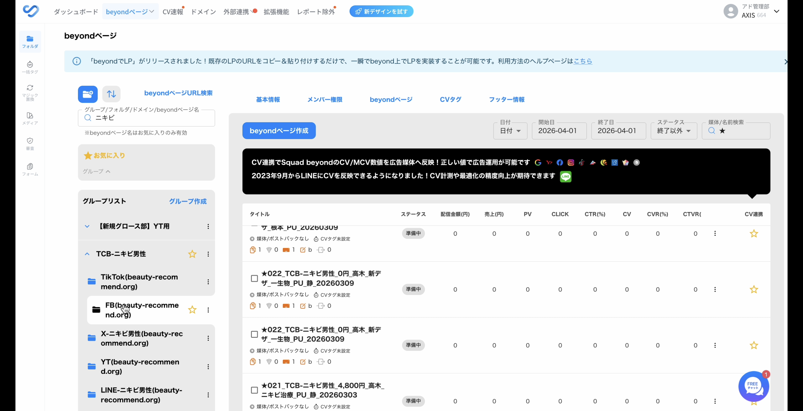
左サイドバーのグループリストから「TCB-ニキビ男性」フォルダを選択
- 右上の「媒体/名前検索」に★をつけて複製元の記事名を検索する
- 出稿依頼スプシの「複製元beyondページ名」に記載されている記事名で検索
- 今回の正解:
★029_TCB-ニキビ男性_0円_高木_自社デザ_根本_悩みモデル_PU_20260311
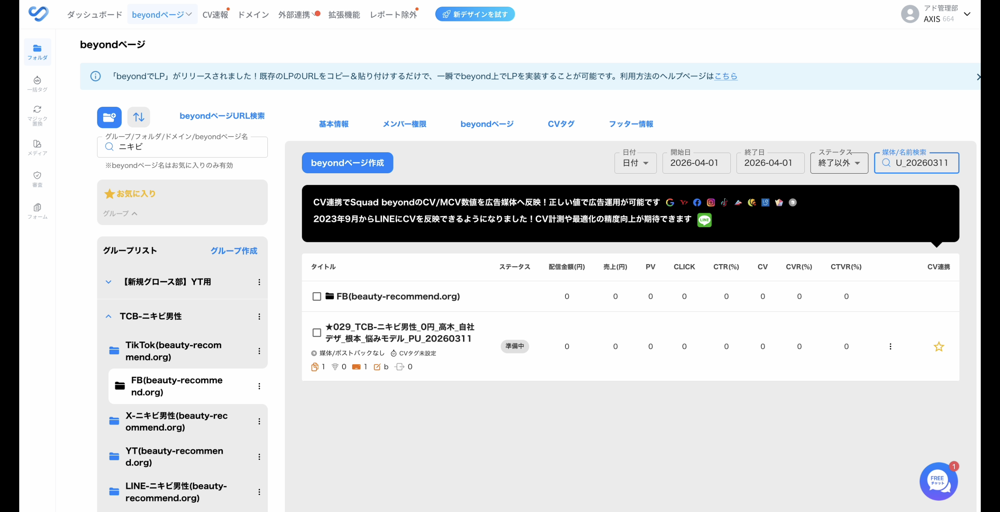
右上の「媒体/名前検索」欄で★付きの複製元記事を検索して絞り込む
2-2. 記事の複製
- 検索結果から該当記事を見つけたら、記事の右端にある⋮（三点メニュー）をクリックする
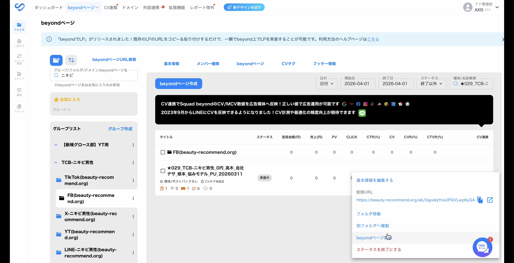
記事右端の⋮をクリックするとメニューが表示される
- 表示されたメニューから「beyondページ複製」を選択する → 「beyondページ複製」モーダルが開く
- スプシに戻り、「beyondコピペ用CPN名」列の値をコピーする
- 今回の正解:
テスト_TCB-ニキビ男性_通常LP_FB_AX340_0406_記事011
- 今回の正解:
- Squad beyondの複製画面に戻り、「beyondページ名」の入力欄に貼り付ける
- 右上の「複製する」ボタンをクリック
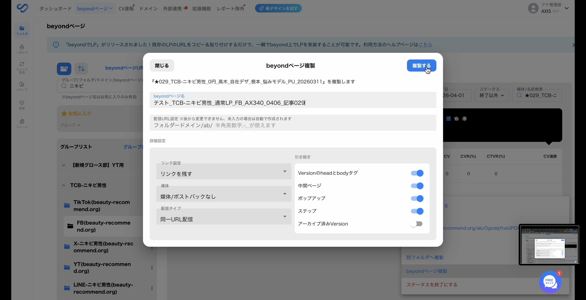
「beyondページ複製」モーダル。beyondページ名にCPN名を入力して「複製する」をクリック
2-3. 複製した記事を開く
- 複製が完了したら、右上の「媒体/名前検索」で複製した記事名を検索して表示する
- 検索結果に複製した記事が表示されたら、記事名の下にある「Version」リンクをクリックする → エディタ画面が開く
- 別タブで開くと作業しやすい（Macなら
Cmd+クリック、WindowsならCtrl+クリック）
- 別タブで開くと作業しやすい（Macなら
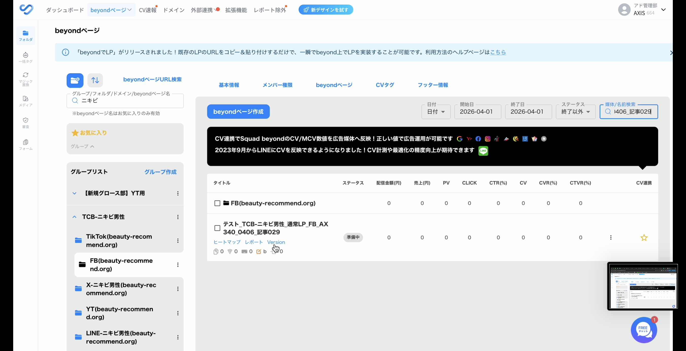
複製した記事を検索して表示。記事名の下にある「Version」リンクをクリック
2-4. アフィリンクの置換
- エディタ画面の右側ツールバーにあるリンク置換アイコン（地球儀に矢印のアイコン）をクリックする
- 右側に「リンク置換」パネルが開く
- 「Version内リンク」タブが選択されていることを確認し、「全て選択」をクリックして置換対象のリンクを全て選択する
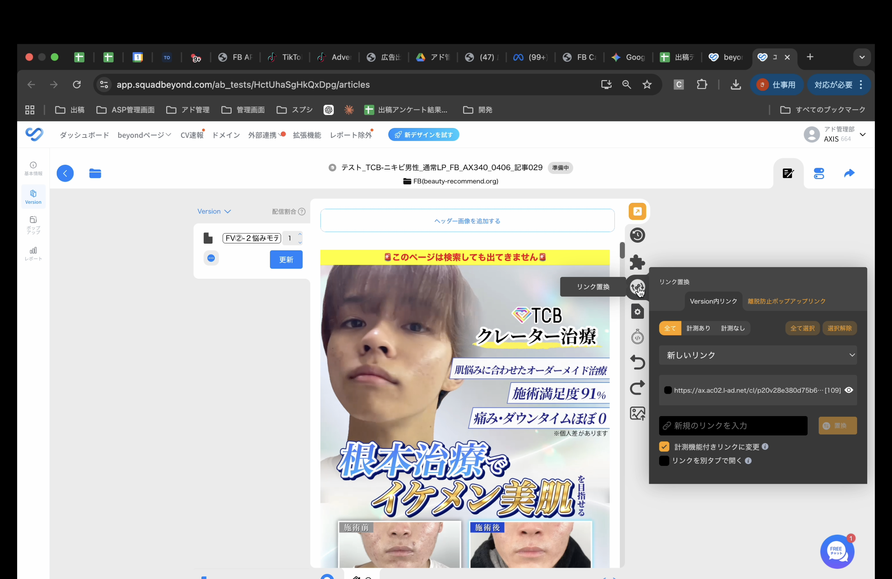
リンク置換パネルを開いた状態。「全て選択」をクリックしてリンクを全て選択
- 下部の「新規のリンクを入力」欄にスプシのアフィリンクを貼り付ける
- 今回の正解:
https://daicon-link.com/link.php?i=phyc8fotno6c&m=mhxfptb5qwye
- 今回の正解:
- 「置換」ボタンをクリックする
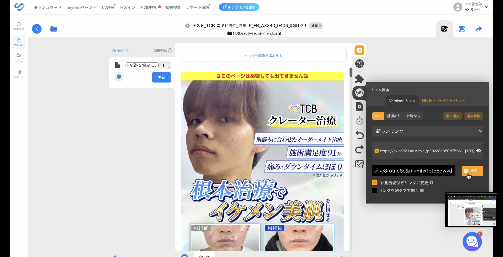
「新規のリンクを入力」欄にアフィリンクを貼り付けて「置換」をクリック
- 左上の更新ボタンを押す → ボタンの色がオレンジから青に変われば置換完了
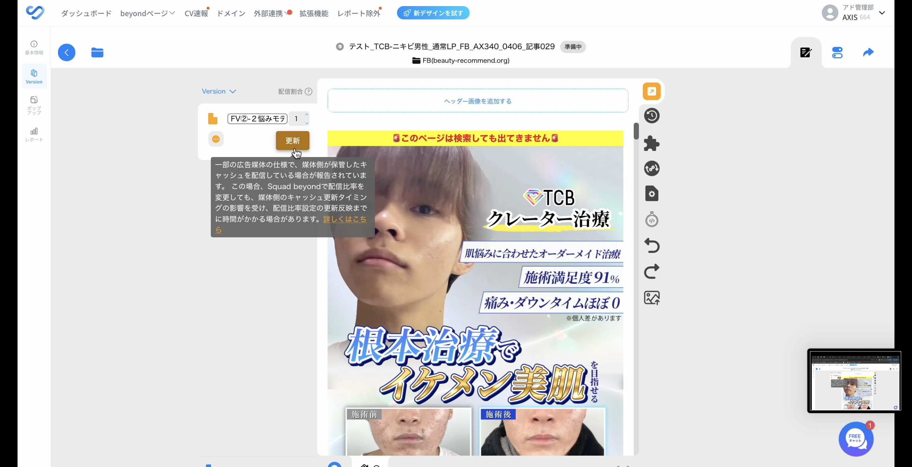
更新ボタンを押す。オレンジから青に変われば正しく反映されている
2-5. ポップアップ記事のリンク設定
- 左側メニューの「ポップアップ」（チャットアイコン）をクリックする → ポップアップ設定画面が開く
- 「離脱防止」タブが選択されていることを確認する
- 「リンク」欄の横にあるリンクアイコン（🔗マーク）をクリックする
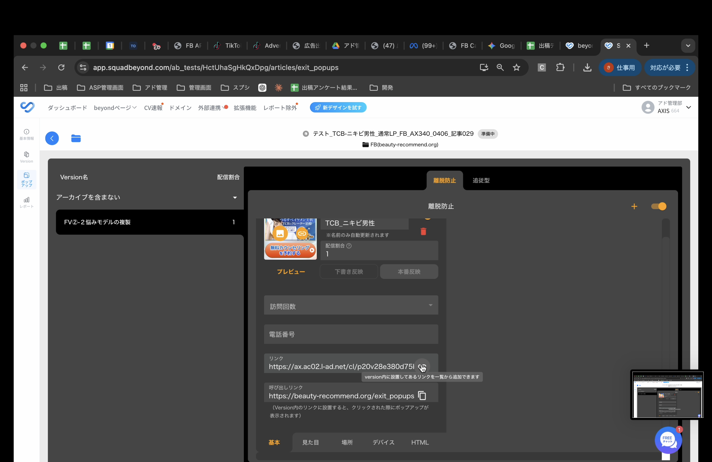
ポップアップ画面の「リンク」欄横のアイコンをクリック
- 「version内リンク一覧」が表示されるので、先ほど置換したアフィリンクを選択する
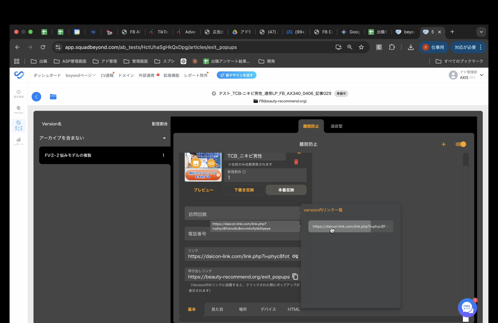
version内リンク一覧から置換済みのアフィリンクを選択
- 「本番反映」ボタンをクリックして反映する
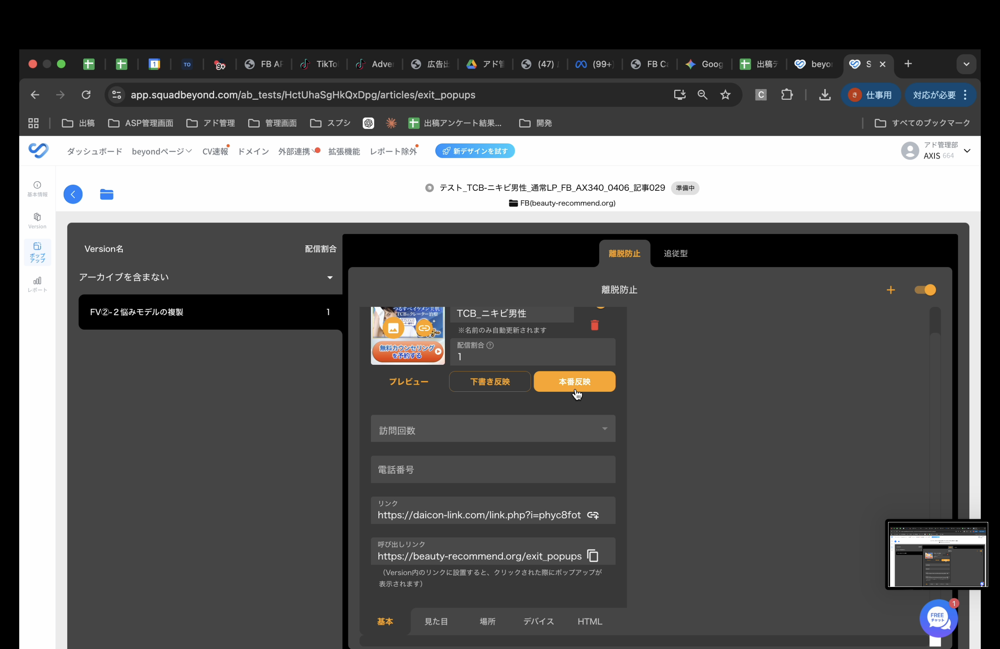
「本番反映」をクリックしてポップアップのリンクを反映
2-6. 記事URLの取得
- beyondページの一覧に戻り、複製した記事の⋮（三点メニュー）をクリックする
- メニューに表示される「配信URL」の横のコピーアイコンをクリックして記事URLをコピーする
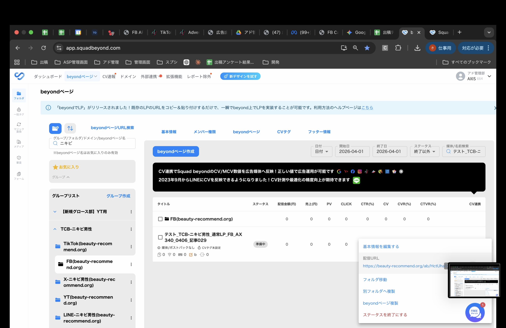
⋮メニューの「配信URL」からURLをコピー
- スプシの「記事URL」列に貼り付ける
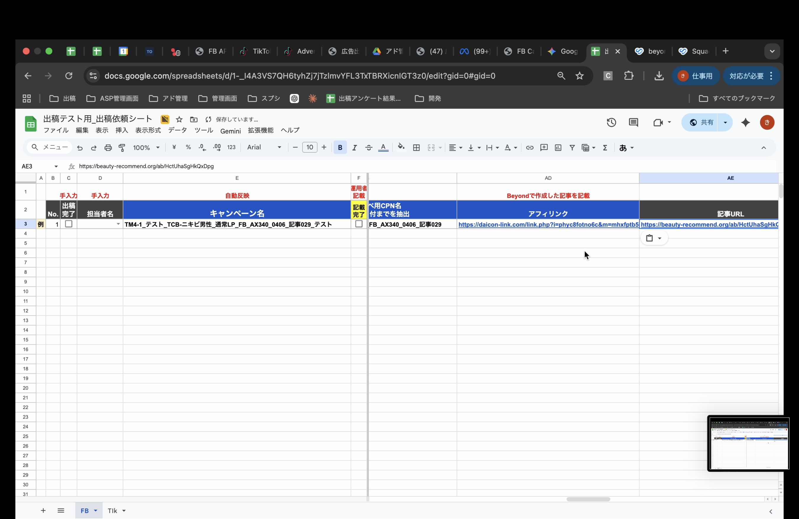
スプシの記事URL欄に貼り付けて完了
自己チェックリスト（Meta）
上から順に自分の設定と照合する。全て一致していればOK。
CRアップロード
- 広告アカウントが「3-294_出稿練習用アカウント」（Business03）になっている
- メディアライブラリの「動画」タブにCRがアップロードされている
Beyond記事作成
- 複製元が「★029_TCB-ニキビ男性_0円_高木_自社デザ_根本_悩みモデル_PU_20260311」になっている
- 記事名がスプシの「beyondコピペ用CPN名」と一致している
- アフィリンクが置換されている（更新ボタンが青になった）
- 記事URLをスプシに貼り付けた
キャンペーン設定
- キャンペーン名がスプシと一致している
- キャンペーン予算がONで¥20,000が入っている
- キャンペーン目的が「リード生成」になっている
広告セット設定
- データセットが「TCBメインピクセル」になっている
- コンバージョンイベントが「コンテンツビュー」になっている
- 開始日が翌日00:00になっている
- 年齢が18〜65になっている
- 性別が「男」になっている
- 地域が「日本」で範囲2kmになっている
広告設定
- FBページが「肌悩み相談所2」になっている
- 記事URLが正しく入っている
- URLパラメーター（リファラ）が設定されている
- CRが正しい動画になっている
最終確認
- CPN・広告セット・広告が全て選択されている
- 配信がOFFになっている（テストなので必ずオフ）
TikTok テストケース — 模範解答
Step 1: CRアップロードの正解
1-1. 素材のダウンロード
- 出稿依頼スプシのCRフォルダURL（
https://drive.google.com/drive/folders/18Pqan8c8nA0qnFsoWu7X1bOEm3vY4tVC）をクリックしてGoogleドライブのフォルダを開く - フォルダ内の動画ファイルを複数選択 → 右上のダウンロードアイコンをクリック → PCに保存
- ZIPで保存された場合は解凍して動画ファイル（.mp4）を展開しておく
1-2. TikTok広告マネージャを開く
- TikTok広告マネージャ（TikTok Ads Manager）にログインする
- 画面右上のアカウント名をクリックし、出稿先のアカウント「NHC_出稿練習用」を検索して選択する
- アカウントが見つからない場合は、検索窓にアカウント名を直接入力する
1-3. クリエイティブライブラリにアップロード
- 画面左上の「ツール」メニューをクリックする
- メニュー一覧から「クリエイティブライブラリ」を選択する → クリエイティブライブラリ画面が開く
- 「アップロード」ボタンをクリック → ファイル選択ダイアログが開く
- 解凍しておいた動画ファイルをすべて選択し、「開く」をクリックする
- アップロードが完了したら、クリエイティブライブラリの一覧に動画のサムネイルが表示されていることを確認する
Step 2: Beyond記事作成の正解
手順はMeta版と同じ流れ。複製元ページ名とアフィリンクがTikTok用の値になる点だけ異なる。
2-1. 複製元記事の検索
- Squad beyondのダッシュボード（beyondページ）を開く
- 左側のグループリストから「TCB-ニキビ男性」フォルダを選択して開く
- 右上の「媒体/名前検索」に★をつけて複製元の記事名を検索する
- 今回の正解:
★029_TCB-ニキビ男性_0円_高木_自社デザ_根本_悩みモデル_PU_20260311
- 今回の正解:
2-2. 記事の複製
- 検索結果から該当記事を見つけたら、記事の右端にある⋮（三点メニュー）をクリックする
- 表示されたメニューから「beyondページ複製」を選択する → 「beyondページ複製」モーダルが開く
- 「beyondページ複製」のモーダル（ダイアログ）が開く
- スプシに戻り、「beyondコピペ用CPN名」列の値をコピーする
- Squad beyondの複製画面に戻り、「beyondページ名」の入力欄に貼り付ける
- 右上の「複製する」ボタンをクリック
2-3. アフィリンクの置換
- 複製が完了したら、右上の「媒体/名前検索」で複製した記事名を検索して表示する
- 複製した記事のタイトルをクリック → 編集画面（エディタ画面）が開く
- versionを開く（別タブで開いた方が楽）
- 「リンク置換」マークを開く
- 「全て選択」をクリックして、置換対象のリンクを全て選択する
- スプシのアフィリンクを入力欄に貼り付ける
- 今回の正解:
https://daicon-link.com/link.php?i=pi0gdq5llwjq&m=mhxzbnl2d1rh - ※Meta版とURLが異なるので注意
- 今回の正解:
- 「置換」ボタンをクリック
- 更新ボタンを押す → ボタンの色がオレンジから青に変われば置換完了
2-4. 記事URLの取得
- 元のタブに戻り、記事の「記事URL」をコピーする
- コピーした記事URLをスプシに貼り付ける
Step 3: Smart+キャンペーン作成の正解
3-1. Smart+キャンペーンの作成開始
- TikTok広告マネージャの画面上部にある「広告」タブをクリックする
- 「＋作成」ボタンをクリック → キャンペーン作成画面が開く
- キャンペーンタイプの選択画面で「Smart+キャンペーン」を選択する（通常の「手動キャンペーン」ではないので注意）
- キャンペーン目的の選択で「売上」を選択する
- 次の画面で「Webサイト」を選択する
3-2. キャンペーン情報の設定
- キャンペーン名にスプシのF列の値を入力する
- 今回の正解:
TM4-1_テスト_TCB-ニキビ男性_通常LP_TIkTok_AX161_0406_記事011_テスト
- 今回の正解:
- 予算に
¥20,000を入力する
3-3. ターゲティングの設定
- 性別: 「女性」を選択する
- 年齢: 「18歳〜55歳以上」を選択する（下限18歳、上限55歳以上）
- 地域: 「全域」を選択する（日本全体に配信）
- プレースメント: 「TikTok」のみONにする（他のプレースメントはOFFにする）
- TikTokのみONにしないと、Pangleなど別の配信面にも流れてしまうため必ず確認
3-4. 広告の設定
- 動画を追加: クリエイティブライブラリからStep 1でアップロードした動画を選択する
- 動画名で検索して該当CRを選ぶ
- テキストを設定する
- テキスト候補が表示されればそのテキストを選択する
- 出てこなければ「ここからのお申込限定」を入力する
- URLにBeyondで作成した記事URLを貼り付ける
3-5. 確認と公開
- 設定内容を全て確認する（キャンペーン名、予算、ターゲティング、CR、URL）
- 問題なければ「公開」をクリックする
- 必ず配信をOFFにする（テスト出稿なので絶対に配信しないこと）
自己チェックリスト（TikTok）
CRアップロード
- アカウントが「NHC_出稿練習用」になっている
- クリエイティブライブラリにCRがアップロードされている
Beyond記事作成
- 複製元が正しい
- アフィリンクが置換されている
- 記事URLをスプシに貼り付けた
キャンペーン設定
- Smart+キャンペーンとして作成されている
- キャンペーン名がスプシと一致している
- キャンペーン目的が「売上」→「Webサイト」になっている
- 予算が¥20,000になっている
ターゲティング設定
- 性別が「女性」になっている
- 年齢が18歳〜55歳以上になっている
- 地域が「全域」になっている
- プレースメントが「TikTok」のみONになっている
広告設定
- 記事URLが正しく入っている
- CRが正しい動画になっている
- テキストが設定されている
最終確認
- 配信がOFFになっている（テストなので必ずオフ）
答え合わせの流れ
1. 自己チェックリストを上から順に全て確認する 2. 不安な箇所は動画と見比べる 3. 全てチェックできたら新人同士で相互チェック 4. 完了したら友利に確認依頼を出す